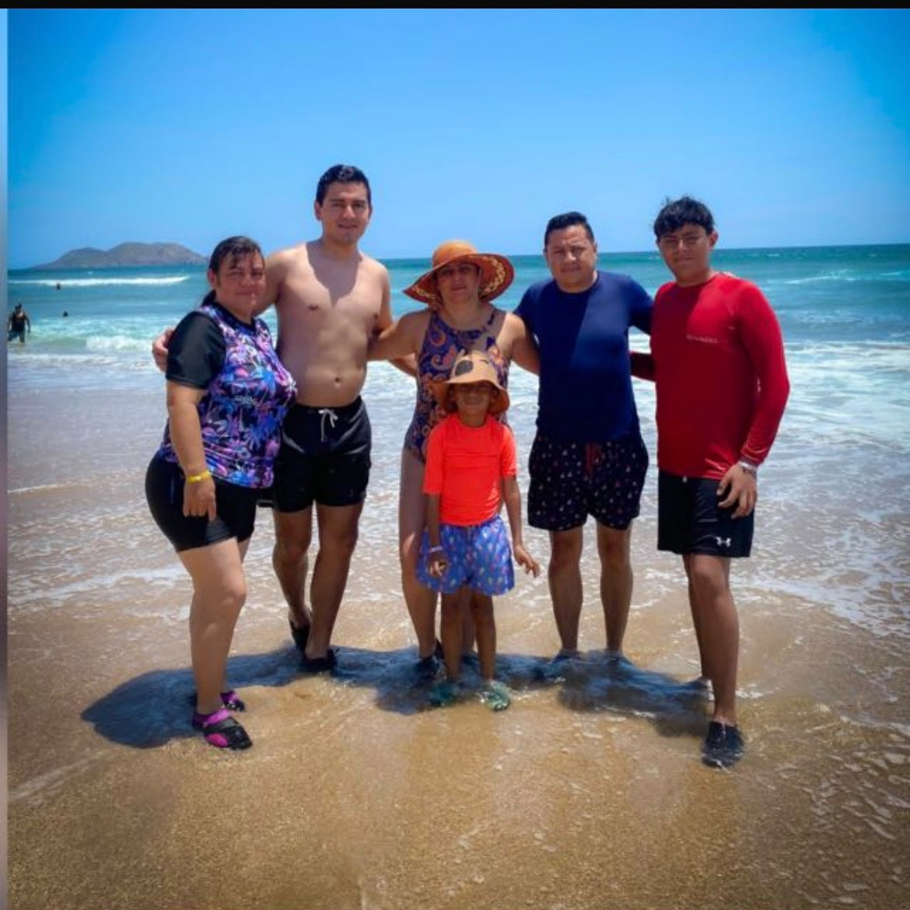
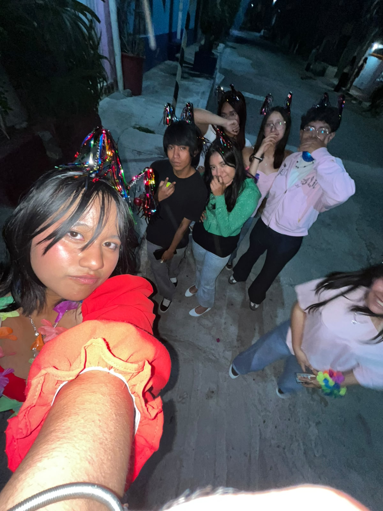

Mis padres son Edmundo y Graciela. Actualmente vivo con mi tía Rocío y mi primo Josué. Todos ellos son mi mayor apoyo y me impulsan a seguir adelante.

En el CECyT 3 tengo grandes amistades como Fanny, Ivett y Pilar, con quienes hago un excelente equipo escolar.

Virtudes: Soy analítico, paciente para resolver problemas y dedicado.
Defectos: A veces soy poco tolerante y dibujar a mano se me complica mucho.
Pasatiempos: Armar Lego Technic, jugar videojuegos y los autos deportivos.
Mi principal aspiración y sueño profesional es lograr estudiar para convertirme en zoólogo, ya que me apasionan los animales y la naturaleza.